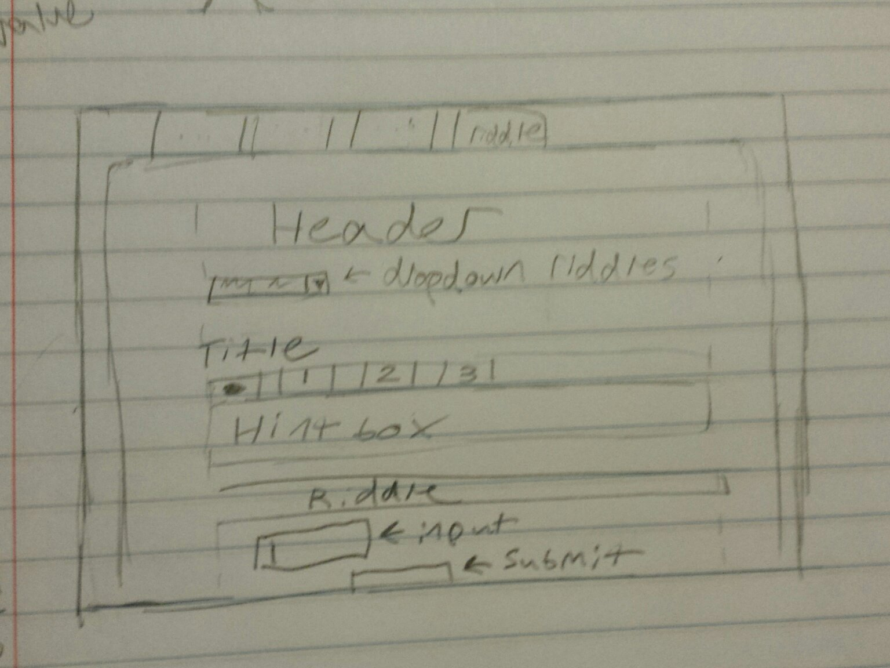

Blog #2
This is a Blog Post for Homework Assignment #2.
This is a Demo for Homework Assignment #2
This is a Repo for Homework Assignment #2
Conceptual Stuff
It was pretty difficult for me to think of a good idea for how to implement some javascript stuff on my page. I had the idea that I wanted to use the base website I had made last week and extend it in some meaningful, useful, way. But I never really had a good idea for how to do that, one that really utilized the requirements.
In the end, I finally decided to just do something a little gimmicky. I thought about just adding some riddles that the user could 'solve' on my site. It gave me some ideas for how to use the javascript, plus I figured finding riddles online to use would be fairly easy. I knew that I wanted a system where the user would be able to get hints of some kind, otherwise trying to solve them could just be annoying. So I did some sketches about what I was envisioning.
Nothing too complicated - I don't need multiple columns and I was figuring it'd just be a top down design. The different elements are fairly modular and can be divided into, essentially, the riddle selector, the hint box, and the riddle itself.
Getting Down the Base Page
Having the idea finished made jumping into html quite a bit easier than just staring at a blank screen for hours. So I went ahead and added in the concepts that I was thinking. Other than the basic layout from last week (which I retained), I also added the form stuff to be modified later.
I ended up using a dropdown box, a text input field, and a radio bullet list (as well as a submit button). I figured this covered the range of possible form stuff pretty well. In the beginning, since I wanted to get the base for everything done before I started messing with javascript, I had the two riddles typed out (stolen from the videogame series Professor Layton, which conveniently had hints in the format I wanted anyways) and formatted early on, despite my intention for only one to be showing at a time.
The forms aren't too difficult or weird, basically just an overarching form section plus subsections for different kinds of user input.
<form id="solution1">
<input type="text" id="answer1"><br>
<input type="button" value="Check Solution" onclick="checksolution1()" class="submitanswer">
</form>
And the radio buttons are just <input type="radio" id="a" name="riddle2" value="0"><label for="a">"Label goes here"</label>
I also went through and added some css stuff to format the new stuff. I wasn't sure on how I wanted stuff to look quite yet, so I had a lot of filler colors and things along those lines for a while.

Javascript and Jquery
I start out by deciding which elements will be tackled how. I decide that the hint box makes sense to be one element that is modified by javascript, and that the riddles make sense to be elements that are created at runtime. I end up deciding to start with the hintbox, since that seems the most self contained.
Sort of like with my navbar, I decided to go with the same sort of style for the hint box. An active tab with the same color background as the body of the text, then inactive tabs that are a little darker. It basically just functions like a small version of the navbar, except it modifies the contents with javascript instead of just going to a different page.
<button type="button" class="activehint" id="hint0" onclick="hint0active()">----></button>
<button type="button" class="inactivehint" id="hint1" onclick="hint1active()">Hint #1</button>
<button type="button" class="inactivehint" id="hint2" onclick="hint2active()">Hint #2</button>
<button type="button" class="inactivehint" id="hint3" onclick="hint3active()">Hint #3</button>
<p class="hint">
If you'd like a hint, press one of the buttons above.
</p>
There was probably a... Better... Way to do the css, but this is what I did. Each individual hint had it's own function that was called when the button was pressed. It works, but it feels kinda goofy.
function hint1active() {
activetoinactive();
$("#hint1").attr('class', 'activehint');
$(".hint").html("<b>Hint 1</b><br>Someone in a hurry might jump to the conclusion that you need to find the lowest common multiple between the three numbers.<br><br>Read the problem over again and see if you can't clear things up for yourself.");
}
After the hint box, I (kind of foolishly) decided to work on the riddle switcher next. I figured I'd just have a dropdown box, then whatever is selected at the time appears in the body. I planned on just basically adding a class below the dropdown box, then deleting it when the user changed the selection.
This worked well, technically. But, well... It was really, really, ugly.

function selectriddle() {
if($(".riddle").length){
$(".riddle").remove();
}
if(document.getElementById("currentriddle").value=='riddle1'){
$("#currentriddle").after("I showed an example of what's here above")
}
I'm not sure if there was a more eloquent way to do it. I was hoping that I'd be able to just load in an .html file to avoid the whole 'no linebreaks' problem. I found some stuff about a load() function, but I think I would have needed to add ajax in (which makes sense, but isn't what I was looking for at the moment).
I finished up by authenticating submitted answers. Obviously when the main concept of the page is riddles, being able to check if you're right or not is important. Thankfully this part is fairly straightforward, and mainly consisted of making sure my forms were set up correctly. My code ended up looking like this:
if($("#rightorwrong").length){
$("#rightorwrong").remove();
}
if($("#answer1").val() == '1'){
$("#solution1").after("<div id='rightorwrong'><br><p><b>You got it!</b>...</p></div>")
}else{
$("#solution1").after("<div id='rightorwrong'><br><p>Too bad!...</p></div>")
}
So basically I check if there's already a right/wrong response given (and if there is, delete it), then give the user feedback based on if their answer was right or not. In both cases I had, the answer was kind of '1', so it worked out basically the same either way.
Afterwards I polished things up a little bit, since there was still a lot of ugliness to be eradicated. Just minor css changes, like in the past. I decided bright blue maybe wasn't the color I was going for. Though I did figure out that to do css on input types you have to break the traditional format a little:
input[type=button]{
background-color:lightgrey;
...
}
It's probably like, actually common knowledge. But needing to use square brackets and an equal sign took me a couple minutes to figure out.
With everything said and done, this is what my page looked like (both with and without a riddle present)
Merging on git
As a footnote, this assignment required working on a non-master branch in git. This wasn't particularly complicated. Basically you just make the new branch and switch to it ($ git checkout -b (branchname)). When you're ready to merge back into master, then switch back to it and merge.
$ git checkout master
Switched to branch 'master'
$ git merge js
It gives you a fun little graph, then you push the change and it finalizes it.